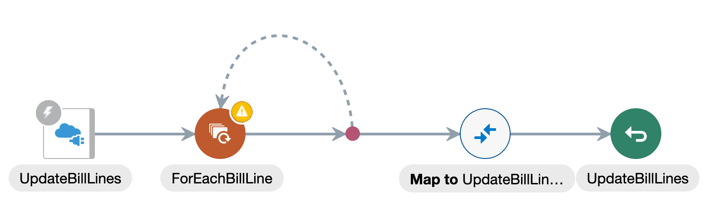

Oracle Integration - Hands-On Lab
Oracle Integration - Hands-On Lab
Before You Begin
Your lab facilitator will provide you the following information to access the environments used in this lab.
Select your OIC Environment:
Enter your User Number:
OIC URL:
OIC User Name:
Your OIC Password will be provided by your lab facilitator.
Some steps in this tutorial have a  icon next to them. Click this icon to copy the snippet of text to your clipboard and then paste where needed.
icon next to them. Click this icon to copy the snippet of text to your clipboard and then paste where needed.
Background
In this hands-on lab, you'll create an integration to update subscription usage data in Oracle Engagement Cloud.
We'll base this lab on the subscription billing demo discussed during other Oracle OpenWorld sessions.
The objective is to automate the update process to bill subscriptions for use of assets. The integration you'll create will update the number of subscriptions for a particular product.
Then, in a following lab, we'll use this integration to create an automated business process.
Sign In
Access to Oracle Integration is secured through Oracle Identity Cloud Service. Users may be granted access to all the Oracle Integration environments in a cloud tenancy, or they may be restricted to specific environments. They may be assigned different roles in each environment.
Open a browser to the OIC URL.
OIC URL:
Enter your OIC User Name.
OIC User Name:
Enter your OIC Password provided by your lab facilitator and click Sign In.
The Welcome page appears. Check out the tour, videos, and links to learn more. Keep scrolling to find more useful links.
Click Home.
The Home page displays an overview with the current state of your instance. You can drill down to get information about available Processes, Integrations, and Visual Applications.

You are now logged in and ready to use Oracle Integration. In the next section we will create a Process App.
Create an Integration
We'll create an integration to connect to Oracle Engagement cloud and update the subscriptions for a specific product. For this lab, we'll create the integration from scratch but you can also create new versions of existing integrations.
From the Navigation menu, click Integrations, and then click Integrations.
Notice that the Navigation menu shows other features such as process automation and a visual development environment. We will explore some of them later.
For the purpose of this lab, we've already set up the connections to remote systems.
The Integration page lists all the available integrations in your environment. These integrations can be in different stages of the development cycle. You can look at the status column to find out if an integration is running (● Active) or under construction (● Configured).
- Click Create.
Select App Driven Orchestration.
This style lets you run integrations on demand as opposed to scheduled orchestrations that are batch driven and run at specific times of the day. We also support other patterns such as publish and subscribe that let you distribute events to multiple integrations.
- Click Select.
Name your integration:
User Update Subscription Product Bill Lines.The name uniquely identifies your integration. Oracle Integration includes a version handling feature to handle multiple versions of an integration.
(Optional) Enter a package number. For example: com.oow.UXX.1.1
A package lets you group related integrations into a single deployment unit.
Click Create.
The Integration canvas appears.
The canvas shows you the flow of your integration, and it lets you add activities. You can resize and flip the canvas to your convenience.
Create a Trigger
Triggers start the integration. After you activate the integration, it listens for a request to the trigger.
Any connections identified as supporting triggers can trigger an integration.
When you activate an integration, if the application supports triggers, Oracle Integration will configure the endpoint to send messages .
- Hover over START and click
 .
. - Type
REST Iin the Search field to find your rest connection. Select the Rest Interface connection.
The Configure REST Endpoint wizard appears.
The wizard shows your progress in the endpoint configuration process.
- Name your connection
UpdateSubscription. - On the Resource Configuration page configure the following values:
In the endpoint relative resource URI field, enter
/subscriptions/{SubscriptionPUID}/child/products/{SubscriptionProductPUID}/child/billLinesThe URI is the path that you want to monitor for requests to start the integration.
The path parameters (surrounded with curly braces) are placeholders for the IDs in the request. These values can be different for every request, and will identify the specific product and subscription to update.
- From the action to perform list, select PATCH.
- Select Configure a request payload for this endpoint.
- Select Configure the endpoint to receive a response.
- Click Next.
In the Request Parameters page, leave the default values, and click Next.
The resource URI and template parameters are automatically added, and appear as the default values.
If you had to specify additional query parameters, you would do it in this page.
- On the Request page, configure the following values:
From the request payload format list, select JSON Sample.
We are passing a JSON document to the integration. We've just provided a sample to configure the shape of the JSON document.
Notice that you can use payload types, including XML.
- Select JSON Sample for the request payload format.
- Click the <<<inline>>> link.
- Enter the following JSON sample:
{ "BillLine" : [ { "BillLinePUID" : "string", "UsageQuantity" : "0" } ] }This simple document specifies the product billing line we want to update and the new quantity for the subscription.
Oracle Integration will validate the JSON document.
- Click OK.
- Click Next.
Notice that the payload type was automatically updated to JSON.
If you need to be more specific, you can manually edit the media type to change the content-type header. By default the content-type header matches the payload type.
- On the Response page, configure the following values:
- Select JSON Sample for the response payload format.
Click the <<<inline>>> link.
You will define the shape of the data that your integration will return.
The wizard gives you the option to define the response payload because you specified that the integration will return a payload on the Basic Info page.
- Enter the following JSON sample:
{ "BillLine" : [ { "BillLinePUID" : "string", "UsageQuantity" : "0" } ] } Click OK.
Notice that in addition to returning a response in the body, you can also attach items to the response.
- Click Next.
(Optional) On the Summary page, expand the endpoint summary to view the trigger for your integration. Check that everything looks right.
click Done.
The canvas with the new trigger appears.
(Optional) Click Reposition to change the layout of the activities.
This is useful for complex integrations where a particular layout helps you better understand the flow of the activities.
- Click Save.
Iterate Over Billing Lines
We may need to update multiple billing lines in the request. The API we'll use to connect to Oracle Engagement Cloud can update only one billing line at a time. So we'll loop over the billing lines to update a single billing line at a time.
We'll iterate the billing lines one by one. We will define which element to loop over, and then assign a name to that element. At runtime the loop will set the current element to each individual billing each time it runs.
On the canvas, hover over the line that connects the first two actions, and click
.Notice you can add different activities. Click
 to view all the available actions.
to view all the available actions.In the Search field, enter
For.The search results includes connections to other system (Invokes), and activities (Actions).
From the Actions section, select For Each.
The Create Action dialog appears.
- In the Name field, enter
LoopBillLines. - Drag the BillLine element from the Source tree, and drop it on the Repeating Element field.
- In the Current Element Name field, enter
CurrentBillLine. Click Create.
The canvas now displays a loop.
For a better view of the loop, select Horizontal from the Layout list.
- Click Save.

Update the Billing Quantity
The loop we just created will update the billing lines for the request in Oracle Engagement Cloud. To do this, we'll connect to Oracle Engagement Cloud.
Oracle Engagement Cloud is part of Oracle Customer Experience Suite, which is a suite of CRM products.
- Hover over the outgoing arrow for the LoopBillLines action.
- In the Search field, enter
Oracle. From the Invokes section, select Oracle CRM.
The Configure REST Endpoint dialog appears.
- Name the endpoint
UpdateBilling. - Click Next.
On the Configure the Required Operation page, leave the default values and click Next.
The resource and verb are selected by default.
To simplify this workshop, we've only provided a single operation. Typically, you would have to choose from multiple resources and operations.
- On the Configure the Request Query Parameters, click Next.
On the Summary page, click Done.
The Integration canvas appears.
Notice that a new map was added to the flow. We'll use this map in the next procedure.
- Click Save.
Add Request Mapping
The data format often varies between applications, so we need to map the format from the source data to the format required by the target application.
In this case, we'll use the map from the previous procedure to transform the data from the source format to the format Oracle Engagement Cloud requires. We'll map each individual field using the recommendations suggested by Oracle Integration.
You can edit maps at any point in your development process.
Click Map to UpdateBilling, and then click
 .
.The Map to UpdateBilling page appears. Notice a tooltip indicates available recommendations for this data mapping.
Click
 Recommendations.
Recommendations.You can also map your recommendations manually by dragging the data from the Source tree, and dropping it on the Target tree. For this lab, we'll use the recommended mappings so that you see how easy it is.
The following recommended mappings appear:
- SubscriptionPUID ⟶ SubscriptionPUID
- SubscriptionProductPUID ⟶ SubscriptionProductPUID
- BillLinePUID ⟶ BillLinePUID
- UsageQuantity ⟶ UsageQuantity

When you map data fields, you set the values for target data based on the source data. Notice that the CurrentBillLine variable in the for each loop is treated in the same way as the incoming request variable.
Click ✓ Apply Recommendations.
A Confirmation message appears informing you that the recommended mappings were applied.
The view changes back to
 Designer.
Designer.Click Validate and then click Close.
The Integration canvas appears.
Click Save.
Notice how much the map has changed.
Add Response Mapping
After running the integration we want to send a response to the caller to confirmed the job was successful and provide any available feedback.
We'll use the update subscription map to populate the response data.
Click Map to UpdateSubscription, and then click
.The Map to UpdateSubscription page appears. Notice that there is a tooltip that indicates that there are available recommendations for this data mapping.
Click
Recommendations.The following recommended mappings appear:
- BillLine ⟶ BillLine (Notice that this mapping automatically generates a for each loop to to map the repeating elements.)
- BillLinePUID ⟶ BillLinePUID
- UsageQuantity ⟶ UsageQuantity
(Optional) Click
 Advanced to view the for each loop that was automatically added when you mapped the BillLine element.
Advanced to view the for each loop that was automatically added when you mapped the BillLine element.Each of the bill lines in the source data is mapped through successive iterations of the for each loop to populate the target data.
Click ✓ Apply Recommendations.
A Confirmation message appears informing you that the recommended mappings were applied.
The view changes back to
Designer.Click Validate and then click Close.
The Integration canvas appears.
- Click Save.
Add Tracking Fields
Tracking fields let you identify specific integration instances. A tracking field associates an integration instance with a business identifier. You must define at least one tracking field per integration. You can use tracking fields to track and locate instances.
For example, for an integration that handles orders, you can track the order number. If for some reason the order is missing or delayed, you can search by the order number to locate the order and find out what caused the issue.
In the Integration canvas, click the error icon
 next to the Last Saved field.
next to the Last Saved field.The icon shows the number of errors you need to fix in your integration.
- Click next to the Last Saved field.
- Select Tracking.
- In the Source tree, expand the execute, and then expand the TemplateParameters node.
Drag the SubscriptionPUID to the first row of the Tracking Fields table.
The first field in the list is the primary tracking field. It's used as the primary index to find an integration instance.
Drag the SubscriptionProductPUID to the second row of the Tracking Fields table.
The fields after the first field in the list are the secondary tracking fields. They act as secondary indexes.
Click Save.
The Integration canvas appears. Notice that there are no errors.
- Click Close.
Activate the Integration
We finished building our integration. Before using it, we need to activate it.
- On the Integrations page, hover over Update Subscription Product Bill Lines.
Click
 .
.In the Activate Integration dialog select Enable Tracing, and then select Include Payload.
Select Enable Tracing to keep a record of all the steps the integration performed.
When you select the Include Payload option, the message payloads are also stored.
We strongly suggest that you don't enable this option in production environments. Including the payload in the tracing will affect the performance of your system, and may violate your company's data retention rules by storing sensitive information in the payload trace.
Click Activate.
A confirmation message informing you that the activation is in progress briefly appears. Then your integration status will change to Action in progress.
Click
 to refresh the status.
to refresh the status.The activation process is asynchronous so you'll need to refresh the Integrations page to monitor the activation status.
When the status changes to ● Active, the integration is ready to run.
Test the Integration
Now let's see if our integration works. We'll use the test feature to call the integration from the development console.
- On the Integrations page, hover over Update Subscription Product Bill Lines.
- Click and select Test.
On the Test page, configure the following URI parameters:
- SubscriptionProductPUID:
3021-PRDT-2005 - SubscriptionPUID:
3021
These requested values are the template parameters that you specified in the endpoint URI that triggers the integration.
- SubscriptionProductPUID:
- Click the Body tab.
- Enter the following JSON:
{ "BillLine" : [ { "BillLinePUID" : "3021-PRDT-2005-BILL-2204", "UsageQuantity" : "5" } ] } Click Test.
A confirmation message informing you that the request was submitted appears.
You can click the ID link to view the tracking information for this instance.
- Expand the Response section to verify that you got a successful response.
Click the Instance Id link.
The Tracking page appears. This page shows an outline of the integration you just tested with the runtime details.

View Tracking Information
The tracking information shows us the path our integration followed as well as any payload data associated with it.
Click .
The Activity Stream pane displays the list of activities.

- Click Message or Payload to view the payload data for a specific activity.
Click to maximize the payload view.
You can now see a maximized view of the request payload. The request payload includes the body you entered, and the template or path parameters.
Notice that you can also click other payloads and messages to view their associated payloads.